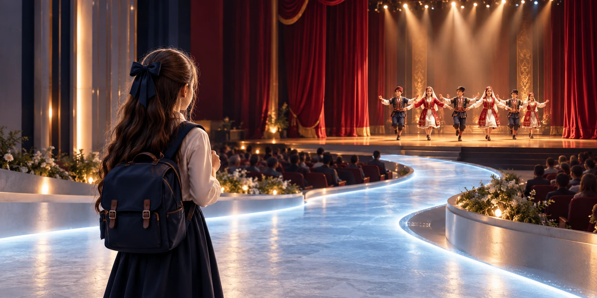

KABUL SÜRECİ
Her adımı şeffaf.
Öğrenci Kabul Sürecine bir göz atın.

ÖĞRENCİ KABULÜ
KABUL SÜRECİ AŞAMALARI
Başvurudan kesin kayda kadar tüm aşamalar, belirlenen ölçütler ve kontenjanlar doğrultusunda yürütülür.
01Kayıt ilkesi
Dışarıdan Doğrudan Kayıt Yapılmaz
Nova’ya öğrenciler, yalnızca ücret ödeyerek veya doğrudan başvuru yoluyla kesin kayıt yaptıramaz. Kabul için yetenek sınavından ve değerlendirme sürecinin başarıyla tamamlanması gerekir.
02Kontenjan
Kontenjanlar Belirli Dönemlerde Açılır
Yeni öğrenci kabulü, her eğitim öğretim yılında belirlenen tarihlerde ve yalnızca ilgili branşlarda kontenjan bulunması halinde açılır.
03Başvuru
Başvuru ve Ön Kayıt
Açılan kontenjanlar kamuoyuna duyurulur. Aday öğrenciler belirlenen tarihler arasında başvurularını tamamlayarak yetenek sınavına katılmaya hak kazanır.
04Yetenek sınavı
Yetenek Taraması ve Sınav
Adaylar; genel yetenek, branş becerileri, koordinasyon, öğrenme kapasitesi ve gelişim potansiyeli açısından çok aşamalı değerlendirmeye alınır.
05Kurul değerlendirmesi
Seçici Kurul Değerlendirmesi
Tarama sonuçları; ölçme-değerlendirme uzmanları, akademisyenler, sanatçılar, sporcular ve ilgili branş uzmanlarından oluşan seçici kurul tarafından değerlendirilir.
06Kabul
Başarılı Adayların Kabulü
Yetenek taraması ve kurul değerlendirmesinde başarılı bulunan öğrenciler, ilgili yılın kontenjanı doğrultusunda Nova’ya kesin kayıt hakkı kazanır.
07Yedek liste
Yedek Liste Sistemi
Kontenjan dışında kalan ancak başarı ölçütlerini karşılayan adaylar yedek listeye alınır.
08Yedek önceliği
Boşalan Kontenjanlarda Öncelik
Eğitim dönemi içerisinde kontenjan boşalması halinde yeni kayıt açılması yerine, öncelikle birinci yedek adaydan başlayarak sırasıyla yedek listedeki öğrenciler değerlendirmeye alınır.
09Kayıt kapanışı
Kontenjan Dolduğunda Yeni Kabul Yapılmaz
Belirlenen öğrenci kontenjanına ulaşıldığında, ilgili eğitim dönemi için dışarıdan öğrenci kabulü kapatılır. Yeni başvurular bir sonraki ilan edilen sınav döneminde değerlendirilir.